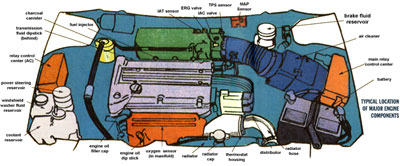
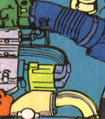
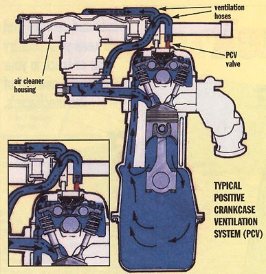
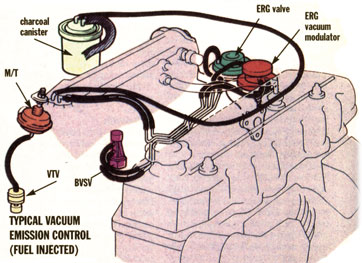

Home Mechanic
Hints and secrets that will keep your country car or truck in your driveway and out of the mechanic's.
Not too long ago, the drivetrains of most vehicles were laid out with a fore-and-aft engine, leading to a transmission which led to a driveshaft that ran under the chassis and back to a differential, powering the rear drive wheels. On top, the engine had a carburetor and big air-cleaner that sucked fuel down into the engine, thick ignition wires that carried a crude ignition spark from a mechanical distributor to spark plugs, a brake cylinder on the fire wall, a battery and radiator up front with maybe an air conditioner off to one side. Oil dipstick, radiator cap, and transmission fluid checking stick or port were all located in the same places.
In today's downsized vehicles, the engine is liable to be arranged sidewise over a front-wheel-drive transaxle that combines transmission and wheel-drive in a single unit (saving many pounds of driveshaft and gearing). The up-jutting carburetor is gone, replaced by a featureless black box containing a fuel injection unit capable of better performance and greater fuel efficiency than a "carb." The battery is still recognizable, but the air cleaner may be tucked over beside the wheel well. Dipsticks and fluid-fillers may be located in unexpected spots, and all of it is covered with a maze of wires and tubes that can be different in each model for each year.
Follow the illustrations, and we'll walk through the operation of a modern engine, indicating routine maintenance work you can perform. (Much of this work is overlooked on modern vehicles that don't need a tune-up-or what remains of this once frequent job-till they pass 100,000 miles.)
As fuel is pumped into the gas tank, air carrying evaporated fuel is displaced-in the old days, venting into the atmosphere and generating up to 20% of air pollution. In modern systems, fuel is filtered out by a charcoal canister and returned to the engine to be burned. Like all emissions-control equipment this system cannot be removed legally and must be maintained in operating condition (though many are useless from neglect). It has no adverse affect on engine performance; indeed, it decreases fuel consumption and cost, so it pays to keep it in shape. If the canister is dripping gasoline or is fractured, you can replace the internal disposable filter, inoperative purge valves, and malfunctioning or fractured housing very easily. Parts are readily available and the manuals show how to test the system and repair the components.
Pushed into a rubber grommet in the valve cover atop the engine is the PCV (positive crankcase ventilation) valve (see illustration on next page) that permits oil and exhaust-fume-contaminated air inside the engine to be drawn into the air cleaner housing, where it is pulled into the cylinders to be burned and its by-products disposed of via the exhaust system.
Here is the air cleaner housing (see illustration on next page). It contains a disposable filter that removes dust and bugs from engine air. If the filter element clogs or is installed so that the gasket between housing and its lid is not seated well all around, it will admit dust that acts like sandpaper and can ruin an engine in short order. At one side of the filter housing is the smaller PCV filter that removes oil particles from the contaminated air being drawn from the engine's crankcase. It gets soiled and is stained an oily brown with normal use. Don't let it clog, or PCV function will be in paired. Check monthly, and change both air and crankcase-air filters any time they appear discolored. Change the air filter as often as weekly if your area is very dusty-if you drive often on dry, unpaved country roads. When you change the filters, use a cloth to clean out the inside of the air cleaner housing as well.
The intake-air preheater is a metal tube that carries air warmed by the exhaust manifold to the carburetor during cold starts. This quickens both starting and warm-up by heating incoming air so combustion is cleaner and more efficient. The 2"- or 3"-diameter metal tubing is often flimsy and easily dislodged. The small rubber vacuum hose that operates a flapper valve in the air-intake can come loose as well. An occasional check to assure that the system is firmly in place can save you gas money and keep the air cleaner.
There are other components of the system that you can maintain using your manuals. Some vehicles have bimetal-coil heat-risers at the base of the system that will rust out in time. Wiring to the electric heaters and electronic controls in newer systems can come loose, fray, or break. You will never know the system is broken till the engine won't start and keep running on a cold morning.
The computer of a modem engine management uses information from a dozen or more sensors to send operating signals to actuators inside the cooling, fuel-intake, and exhaust systems and in the engine itself. The computer program and its operation should be automatic, seamless, and transparent to the driver. However, sensors and actuators are exposed to engine heat and dirt, and not all made to last as long as they should. More problems are caused by faulty computerinput/output devices than by serious engine malfunction-but failing to replace the inexpensive little parts can result in serious engine damage.
The problem that made your CHECK ENGINE light fire off or that's causing it to misfire, hesitate, or stall can often be fixed by assuring that all vacuum hoses (for the many emissions-system devices operated by exhaust suction) and electrical fittings are firmly attached.
With a basic knowledge of the engine and experience (or a man's hunch or women's intuition-often the best diagnostic device) or with a simple hand-held code reader and a diagnostic manual, you can often locate a faulty sensor or activator. Even if you can't cure the problem, you can pinpoint the source for a mechanic, saving him learning time and saving you repair costs.
Following are the major components of the engine management system. Most are small and may be located anywhere on the auto. They are interconnected by vacuum tubing or wires-all of which must remain sound.
The computer itself can be located inside the cab under the seats, under the dash, or (as here) on an exterior fire wall. There isn't much that you or I can do but make sure it is firmly fixed in place and that all wires are firmly attached.
MAP (manifold absolute pressure) is the vacuum caused by air-fuel mix entering the engine. The sensor that reads its value is connected to a hose leading into the intake manifold; breaks in the hose are a common problem source that you can identify and fix easily.
MAF (mass air flow) and VAF (vane air flow) sensors gauge the air flowing into the engine. The MAF type are all-electrical. But a VAF contains a mechanical flapper valve that can corrode and break or become fouled. If you have the latter, assure that it works freely. Removing the vent and squirting with carb cleaner periodically will prevent jams.
Air and water temp sensors are solid-state devices with electrical wires that can work loose or break. If a code readout indicates problems, the manual will give test parameters. Replacement is easy (if you can find the infernal things).
This applies as well to the oxygen sensor in the exhaust manifold and to sensors for the EGR valve, vehicle speed, air control valves, and more little gadgets located all over the vehicle. You can avoid the most common problems by getting a repair manual, locating each device, determining how it should look when new, and checking it periodically to replace vacuum hoses or electrical connectors that have come loose. Or, replace it preemptively to avoid problems.
In the future, when replacing wearing parts (installing a rebuilt carburetor, for example), plan to replace the attendant electronic gadgetry as well (on the carb, install a new throttle-position sensor and any fuel or airflow measuring devices). The manual will show how-but won't tell you when.
Fuel-intake systems incorporate filters with elements that should be replaced periodically. Especially with easilyclogged fuel-injection systems, this job should be done by a qualified mechanic. Indeed, some manuals recommend that the final filter never be removed and rely on a prefilter located nearer the tank in the fuel line. You can avoid most contaminated-fuel problems by buying fuel from reliable brand name stations from pumps with water separators/filters and by assuring that the nozzle and area around the filler pipe is clean before you gas up. If a section of rubber fuel line is accessible under the hood, you can insert a small replaceable in-line filter as well. Be sure to replace it periodically.
Carburetors (if your vehicle still has one) have externally-mounted automatic chokes, base heaters, and other devices for easy and automatic starting. Automatic chokes are operated by suction or electricity, and the vacuum tubes or wires can work loose. Or, the actuators wear out in time. Indeed, the infamous "choke pull-off" is still a common cause of hard starting. It is easily replaced but should be done by an experienced mechanic unless you are a dedicated auto DIY'er with a full mechanic's tool set. Ditto for carb adjustments (if any are possible) as well as an eventual rebuild or replacement.
Jets on fuel-injection systems need replacing periodically, as do the pump and plumbing. This definitely should be left to the pros.
Modern engines eliminate NOx, an Ozone contributor, from emissions by injecting a small amount of low-oxygen exhaust gas into the fresh fuel charge. The EGR (exhaust-gas recirculation) system that does this is all-metal, robust, and complex, and it is best left to a pro.
The air-injection system is the reverse of the EGR system. It doses exhaust gasses with fresh air so pollutants will have oxygen to burn to harmless gas and water inside the catalytic converter. Active air injection systems do this with an alternatorsized "smog pump" running off the engine belts. Passive EGR systems harness changes in exhaust pressure to do the pumping. Malfunctions do little to influence engine performance or appearance of the exhaust, but will turn up at an exhaust-gasses test. All of them feature hoses and simple valves that can be tested and replaced by a pro.
Contrary to popular opinion, a smog pump takes no more engine power than an idler pulley. The air-injection system is often neglected (or illegally removed) in states that do not require an annual smog test. For the atmosphere's sake, leave yours in place and have it tested periodically.
Under the auto, installed in front of the muffler in the exhaust system is the catalytic converter. It heats up to 1,600°F and converts pollutants into harmless gasses and water. It may be fitted with an air inlet from the smog pump and one or more sensors. It is normally foolproof and will last 100,000 miles. But if you have a poorly adjusted engine (running rich), the element inside can melt and reduce exhaust flow, severely reducing performance. An experienced mechanic can spot a clogged converter by feeling the vehicle's exhaust. So can you ...if you know what it should be.
So, learn all you can about how the machine operates, how it looks, feels, and smells when new. Then, you'll be able to diagnose many problems and fix as many as you care to tool up for.
Some auto components degrade with time, others with wear, others from weather, others from poor care, and some from combinations of the four. The condition of many has an effect on the vehicle's emissions, fuel economy, and contribution to the landfill as well. If you take a little time to learn what parts are affected by which hazard, how to minimize the damage, and when to replace key parts before they fail, your pocketbook-and the environment-will benefit.
Though it goes against the do-it-yourself inclination of Americans, as soon as you get the new hauler home, take the owner's manual out of the glove box and read it through. If you intend to work on the vehicle yourself, also obtain a copy-current for your vehicle's model and year-of the Chilton, Haynes, or other allinclusive repair manual. They are available for under $30 at a book or auto parts store. At the same time, get a container of hard axle grease, several spray cans of light engine oil, a jar of white door-hinge lube, a tube of powdered-graphite lock lube, and a quart of good hard auto wax or one of the new fluid non-wax car polish.
Open all the doors, pop the gas-filler-door, lift rear-hatch covers, and see how things operate. Try everything that moves, cinch gas cap on tight, and fasten any loose items in the hatch area so they are stable and rattle-free. As you go, apply hard grease to spring hinges, white grease inside and all over door latches and over seat slides, plus a good shot of powdered graphite into locks. Inside such hidden spaces as the gas lid and well behind the fender, apply a thin but thorough coating of spray-oil. Let it drip and, in hidden crannies, let it accumulate road dust that will help the oil skin over and hold fast. These simple measures will stop corrosion before it can start.
Go over the inside as well. With small amounts of grease and an oily rag, coat any hinges and metal surfaces that won't soil your clothing-up under the dash, inside ash trays or metal glove box doors.
Make a note to order a set of aftermarket doorsill covers and install them after greasing their undersurfaces as well as the metal sill itself. In ten years, the sill will be strong and pristine rather than rusted.
The best wear-preventative measure is to buy good-quality floor mats and seat covers and to change them for new when they wear.
A bed liner can protect the bottom and sides of a truck bed. But, it can also rub, wearing off paint, hiding rust, and voiding your warranty. Read the owner's manual and install only an approved liner.
Now, raise the hood and familiarize yourself with the engine and accessories. Identify and check inspection ports and dipsticks for coolant, engine oil, transmission, brake, power-steering, windshield-washer, and any other fluids. Read the owner's manual as you go. You'll note that the engine must be off to check oil; it must be running to check automatic transmissions. Batteries and air conditioning contain fluids but are sealed systems.
Following our introductory illustration and your manuals, try to locate key emissions equipment. While the engine is still clean, remove, inspect, and re-install easily-removed filters. Wiggle air-intake and other hoses. If anything comes off, reattach it and tighten the compression clamp. Inspect rubber hoses for solid attachment at both ends.
Nothing under the hood (except battery terminals and bare metal of the underside of the hood, its hinges, and latches) should need greasing or preserving. Oil hood metal, and remove and coat battery terminals and the lead cable clamps with hard grease. DO NOT wipe some late-night-TV-hawked preparation all over your belts, hoses, and fittings. The best of these are worthless, and some will melt plastics and make rubber gummy.
If a fan belt squeaks, you can dress it with Ivory soap.
A good country hauler will have ground clearance sufficient for you to "get out and get under" as the old song says. Be sure the emergency brake is set and wedge good stop-blocks on the downhill side of the two uphill wheels. Lay out a ground sheet or flattened shipping carton if the driveway is wet or rocky and slide around beneath the machine. Locate major drivetrain components, drain plugs, exhaust system, and brake system parts. While you're there, check for leaks. If you spot any fluid on the chassis or on the ground underneath, note its color and texture (antifreeze is green; brake and transmission fluids, red; oils, clear or tan), and tell the dealer. Such leaks are rare in today's new vehicles, but the sooner one is fixed, the better.
Thoroughly oil-spray the undersides of the wheel wells and all body metal you can reach. Do not coat rubber or plastic parts (a coat of car polish can protect hard plastic).
Grease exposed (brake system) springs and spray oil over all exposed metal surfaces of the underside of the vehicle, painted or not. Put a ground cloth or absorbent litter under the vehicle to catch drips.
Put a light coat of hard grease over steel drive shafts, iron housings-but not on aluminum or other pot metal. Spray especially well into body cavities such as the channels under those doorsill protectors.
Put the little red plastic tube on your spray can and spray through the drip holes at the bottom of doors and hatches so it coats inner surfaces of the tin. Next day (and periodically thereafter) run a wire into the drip holes to assure that they are not clogged and will let rust-promoting condensation and rain water flow out. Drilling holes in the door and spraying all the window-closing mechanisms, as is still needed on older vehicles, is not necessary with modern corrosion-proofing (where the entire body, door shells, and other major parts are dipped in hot zinc galvanize and other preservative-fluid baths). With the inside of the bottom panel oiled occasionally, the door will last indefinitely. (In time rubber gaskets around windows may begin to leak and will need replacing. But that's decades away.)
Then go over the vehicle, performing more Preventive Maintenance (PM) chores that will save you headaches in years to come. Locate and remove the spare. Wipe a light coating of light oil over the wheel and liberally coat attachment screws and nuts with hard grease so they'll come off easily even if not removed for the first time till ten years hence. In storing the spare, be sure tire valve is exposed so you can check inflation from time to time. If the wheel is exposed to road grime beneath or on the rear, invest in a good tire cover and install it. Put cover on top of under-chassis tires so tar and road crud won't accumulate in the wheel and turn to hard-to-remove concrete over time. Coat all sides of hold-on components with a light coat of hard grease.
If you plan to perform major maintenance jobs yourself, go to an auto parts store and get the largest hydraulic jack you can afford (ten-ton), a long 3/4"-drive handle, and sockets to fit the lug nuts that hold your wheels on. (A compressor and air tools are even better, but expensive, for when you have the need to do a lot of heavy work.)
Put anti-roll wedges under two wheels (as well as jack stands; call us worrywarts, but the physical injury possibilities here are ...well...use your imagination). Consult the manual for jack placement, and use the jack to raise the axles so one wheel after another is just off the ground. If you want to get under the vehicle, place large logs or concrete (for lighter cars only, stands for heavier models) under the frame so if the jack fails, the vehicle will be supported by blocks.
Then remove wheels one at a time. Lightly oil insides of wheels and grease the hub around the studs. Grease any suspension parts you didn't get from underneath. Don't lubricate the large round brake discs or other wheel/brake parts.
Pack hard grease into threads of lugs (big screws jutting from the end of the axle that hold wheels on) and lug nuts, and replace wheels. See owner's manual for tightening sequence for lug nuts. If you have a torque wrench, tighten to 80 lbs. (Any time you have wheels or tires serviced, demand that lugs be tightened to no more than 80 lbs or you may not be able to remove a flat.)
Add the 3/4""-drive, lug-nut-removing tools to your jack set or carry them along with the larger jack under a seat for much easier flat repair.
Make it a habit to check inflation of your tires (spare included) at least once a month. Buy and use a good-quality all-metal tire gauge, not the chronically inaccurate dials on service station air pumps. Inflate to the precise pressure molded into the sidewall of the tire. Overinflation may improve gas mileage marginally but will cause uneven wear that can ruin a tire in a fraction of its designed (up to 80,000-mile) service life. Intentional underinflation is OK to increase traction briefly in hard weather. But, chronic underinflation wears tires unevenly, too fast,-and can lose you up to 2% fuel efficiency for each pound of pressure the tires are low. Five pounds low means a loss of 10% of your gas money, a 10% waste of limited petroleum resources, and 10% more needless emissions in the air.
After pot hole time in fall and spring (in snow country), run your hands over the surface of your front tires even if they appear to be wearing evenly. If you feel stillinvisible sharp ridges on one side of the tread grooves, your alignment needs checking. Fix it before wear becomes visible, and your tires will last tens of thousands of miles longer.
Be sure to have tires rotated and wheels balanced once or twice a year to further even out wear. With a good tire costing the better part of a hundred bucks these days, the expense would be more than justified even if you weren't saving gas money and finite natural resources.
Whether you do it yourself, go to a Jiffy-Lube, or to the local mechanic, if you intend to keep a vehicle running for twice the 100,000 miles the makers expect, change lubricants at half the recommended intervals, and grease all the joints for steering and suspension connections. Better yet, buy a grease gun and hit those spots whenever you like. Change engine oil at 3,000 miles rather than 7,500 and all running-gear lubes annually at least.
Engines are happiest running hot at hi revs. If you do a lot of stop-and-start driving and/or travel short distances (under ten miles) so the engine can't heat up enough to burn the oil clean, water and really evil corrosive agents can build up. If the car sits for prolonged periods between such short trips, the engine can be ruined at under 10,000 miles. Under these conditions (the hardest on an engine) you should change oil every six months at minimum even if it looks clear and clean.
And-under any driving regimen-spend a few bucks more for the new synthetic lubes such as Mobil 1. These are made from petrochemicals so you aren't saving petroleum, but they do retain a constant viscosity under severe conditions. Mobil 1 resists thinning at hi temps and will flow at - 55°F-to say nothing of normal cold winters when mineral oil will thicken and fail to pump up into the engine to do its job till heated. By that time, engine wear can be considerable. Synthetics have also been shown to reduce engine wear, deposit less varnish, and reduce oil consumption by eight times as compared to mineral oils.
Always follow manufacturers' recommendations as to lubricant grades. But, if possible, buy the new EC grades of oil. EC stands for Energy-Conserving. These oils contain less phosphorous that can ruin catalytic converters. They also increase gas mileage by .5% to 1.4%.
Keep your cooling system filled with fresh antifreeze (to strengths on label or owner's manual) even if you don't live in snow country. It contains powerful anticorrosives as well as freeze-proofers. If possible, have the coolant overhauled annually at a garage, and have them backflush the system at the same time. (If replacing your own, dispose of the old coolant at a garage or a recycler. Don't just let it drain away in the grass; the stuff is toxic to plants and animals.)
You should check the thermostat (inside a metal housing near the hose outlet) periodically for buildup of crud. Clean it out and (especially if the heater has been running hot or cold) replace it every few years. See your owner's manuals for the thermostat temperatures recommended and your repair manual for replacing the thermostat (get a tube of liquid gasket to augment the paper gasket that comes with a new thermostat).
Check hoses for cracking and leaks. Tighten clamps if they permit. If clamps are not able to be tightened and you see a green buildup around the hose mouth, there is a small leak that could escalate at any time.
Inspect the cooling system hoses while you're at it. Drain system, remove a new hose, inspect, and reattach with a new clamp. Replace older hoses (all of them), installing with new clamps. Be sure to clean the outlets that hoses slip over to remove stuck-on hose liner, corrosion, and mineral buildup. Otherwise the hose may not fit cleanly, and leaks will recur.
The best thing you can do to keep the cooling system clean is to add distilled water any time the coolant level drops. It only costs a dollar a gallon or so at any drug store. Distilled water lacks the minerals that are found in most water supplies and that build up as water is lost to evaporation, clogging the narrow channels in the engine radiator and heater core.
Most fluid changes are a routine drain and fill, but automatic transmissions take longer and entail replacement of the filter. Hi-tech systems may be even more involved. ABS brake systems, for example, must be drained annually, or old, watery fluid can ruin the sensitive electronics. Electronic test gear and experience is required, and the job is costly-but if you don't have it done, a new ABS system costs thousands of dollars.
As a rule of thumb, halve all manufacturer-specified intervals between routine maintenance procedures, and your car will be on the way to lasting almost forever. MOTHER doesn't personally guarantee this formula of course. But auto manufacturers want their cars to last just long enough to make you happy enough to buy another new one. Lubes deteriorate under the heat and thrashing of use, and engine oil carries off combustion by-products that can build up and rust the engine from the inside out. You can't go wrong replacing them more often than Toyota, Honda, Ford, Chrysler, or The General recommend.
Unless your owner's manual warns otherwise (some traditional finishes should be allowed to dry for a few weeks), apply a good non-wax, rub-on-and-polish auto polish such as NuFinish by ReedUnion Corp (in the orange plastic containers). Apply to shiny paint, chrome, and other shiny metal. Don't put on tires, other rubber, or plastic of any kind. Follow with a second coat in a month, and it will last six months or longer.
Today's computerized vehicles have a reputation for mystery that the aftermarket is finally attempting to dispel. For some time now re-programmed chips have been available to give selected cars added acceleration and speed. And now, several firms are producing devices that can actually extract repair information hidden in your vehicle's computer. Shops have multi -thousand-dollar consoles to get this data, but you can buy a little handheld code-reader for from $50 to $400. You'll also need a good manual describing emissions controls and engine management systems, a book of codes, and (possibly) a special plug to adapt the reader to your vehicle. Haynes Automotive Manuals are one source. Call (805) 498-6703 for a list. The JC Whitney Catalog, (312) 4316102, lists books and code-readers. Any custom auto shop will be able to get others. (They appear two years after each model year-after warranties run out.)
When the engine acts funny or the fearsome CHECK ENGINE light fires up, get out manual and meter, put a jump wire or two into the computer panel, plug in the reader, punch a button, and a sequence of lights blink, or you get an LED reading. The code book tells you what the problem is, and you are on your way to becoming your own service person.
More than 90% of engine wear occurs on start-up. Grinding a cold engine over and over in cold weather shortens life of starter, battery, engine, and your temper. Have an engine block heater installed and plug it in on cold nights. Carry a long outdoor power cord and hook it up at work too if the day will be cold.
Highway salt hastens rusting. It is at its worst in warmish weather when it dissolves in slush and water, and is splashed up to penetrate into all the crevices of your vehicle. Wash the vehicle frequently-including an underbody power spray. If you are buying a new vehicle, make sure it is undercoated at the factory. If it isn't, there are more than a dozen aftermarket undercoating applications you can do. Don't live without it in cold regions.
Almost as important is keeping the under-carriage well oiled. After your initial work over, a professional can do it best with a hi-powered applicator. Be sure they use new oil (not used, toxin-laced oil). Have it applied annually well before the start of salt-season. Reapply after every half-dozen underbody power washes.
Chase your rights under the new-car warranty so long as it lasts. Then, to preclude serious problems, begin a program of scheduled replacement of wearing parts. Use the dealer's parts store (if possible) for replacements. Major failures cannot then be attributed to you for installing a faulty part made of God-knows-what. Keep a log of your maintenance as well.
But, customize the list to your vehicle and fine-tune replacement times with your mechanic and other owners. Between 80,000 and 120,000 miles you should have replaced all wearing components except for the engine block and, perhaps, the transmission, which can last for amazing time periods if provided with good care and treatment. They won't last forever, however, and you may want to save up cash. A good used engine will cost $700 to $1,200 installed; a rebuilt transmission, the same. If the vehicle is in outstanding shape, you may want an all-new engine. It will cost $2,500 and up; a rebuild, perhaps half that. All other jobs will cost substantially less. Spread out over several years, you'll hardly notice the cost-and at the end of the rebuild period, you'll have virtually a new vehicle and no monthly payments.
|
 click to enlarge |
 |
 |
|
 |
|
|